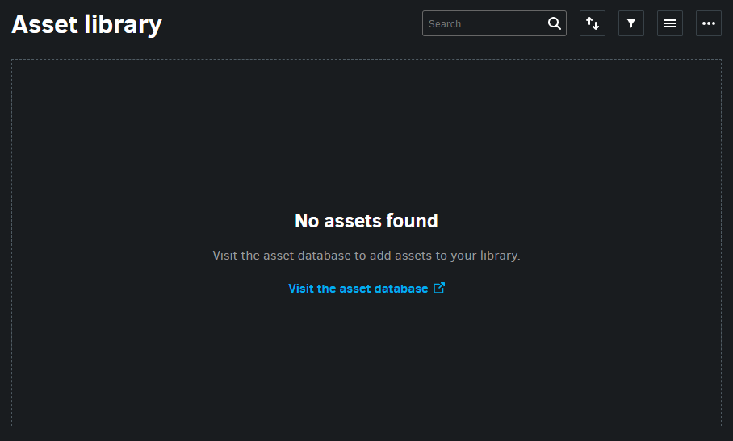
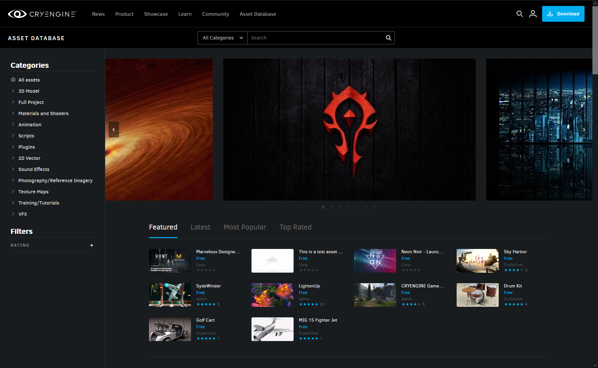
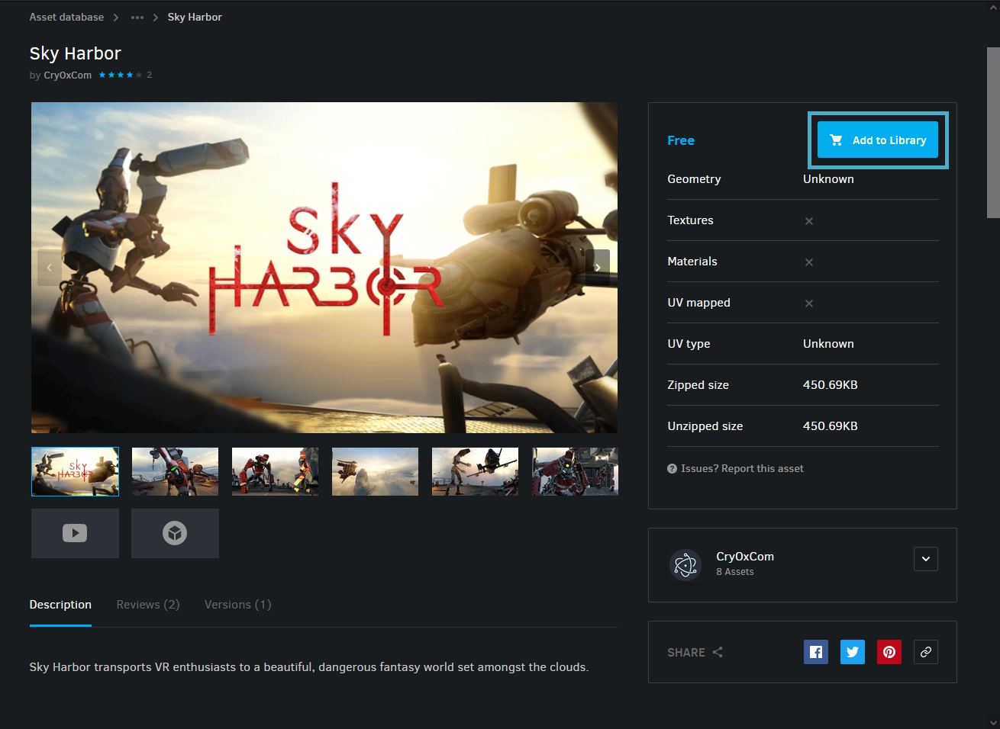
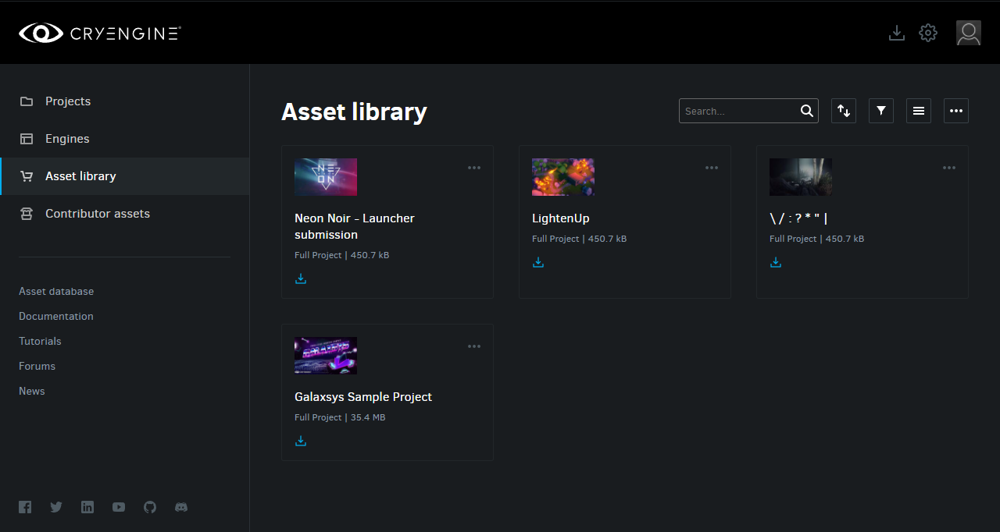
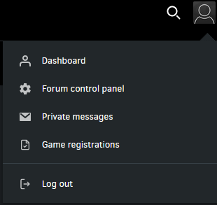
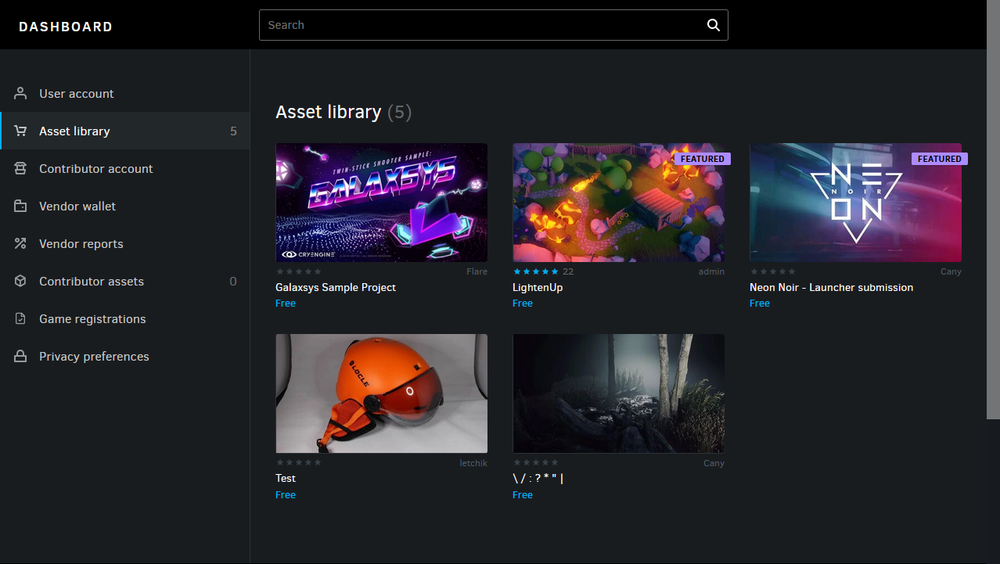
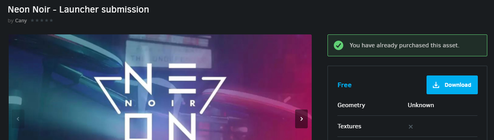
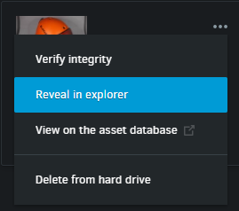
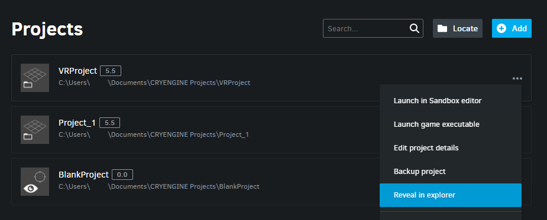

The CRYENGINE Asset Database allows you to supplement your projects with an extensive range of free assets created by other developers.
To start using assets from the Asset Database, you must first do the following:
- Find and order the assets you want in the Asset DB.
- Download the assets through the Launcher or Asset DB.
- Import the downloaded assets into CRYENGINE.
Acquiring Assets
Open the Asset Library tab and click on Visit the asset database in the center of the dashboard to be redirected to the CRYENGINE Asset Database in your web browser.

Empty Asset Library in the LauncherAlternatively, you could also click the Asset Database hyperlink on the left panel of the Launcher.
- Log in to the CRYENGINE Asset Database website with your CRYENGINE account credentials. You will then be able to use the search bar or browse through specific categories to find the asset you're looking for.

The CRYENGINE Asset Database - Select the asset you want to use and then click Add to Library. Upon agreeing to the Assets ToS, the asset will be made available in the Launcher's Asset Library.

Add to Library - Following that, you should immediately receive an order confirmation by email.
Order confirmation
Downloading Assets
There are two ways to download the assets you ordered;
- Through the Launcher
- Simply navigate to the Asset Library tab and click the icon within the asset listing.

Asset Library
- Simply navigate to the Asset Library tab and click the icon within the asset listing.
- Through the Asset Database
- On the top-right corner of the Asset Database website, click the icon and access your Dashboard.

User menu - Once there, head to the Asset Library tab, where you should see all the assets you own.

Owned assets Navigate to the page of the asset you want to use in your project and click the
button. The asset will then be downloaded to the Launcher.

Downloading an asset through the Asset DatabaseThe CRYENGINE Launcher must already be installed for this method to work.
- On the top-right corner of the Asset Database website, click the icon and access your Dashboard.
Importing Assets into CRYENGINE
The last step in this process is to import the assets you downloaded into CRYENGINE itself.
- Locate the downloaded asset's files by clicking the


Opening the asset's folder in the file explorer Copy the sub-folders in the Assets folder of the asset download and paste them into the the sub-folder that corresponds to the downloaded asset's type in your CRYENGINE project's Assets folder.
To quickly open the Assets folder of your CRYENGINE project:
- Switch to the Projects tab in the CRYENGINE Launcher.
Click the icon besides a listed project and select the Reveal in Explorer option. This opens the project's storage directory in the file explorer.

Reveal project in explorer
Once this is done, the imported projects will be visible in the Sandbox Editor's Asset Browser and ready to use in your projects.